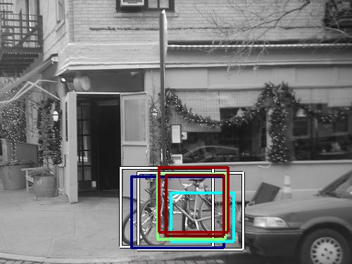
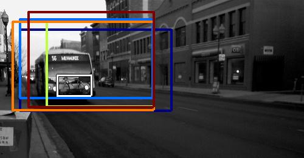

0.592786

0.620587

0.682953

0.685515

0.696490

0.702198

0.705078

0.717981

0.721385

0.740198
| Target image | 0.592786 | 0.620587 | 0.682953 | 0.685515 | 0.696490 | 0.702198 | 0.705078 | 0.717981 | 0.721385 | 0.740198 |
Target image |  2683.651611 |  2486.284180 |  2424.296875 |  1607.467163 |  1604.171387 |  1595.167725 |  1549.351807 |  1465.790039 |  1452.286255 |  1392.601562 |
Target image |  2868.430908 |  2141.080078 |  1545.857056 |  1399.944824 |  1320.638916 |  1263.631592 |  1256.050781 |  1253.145020 |  1127.273682 |  1120.973389 |
Target image |  2558.114746 |  2305.280029 |  2073.791992 |  1644.159058 |  1536.442871 |  1523.705444 |  1501.577881 |  1440.009155 |  1419.021362 |  1326.913574 |
Target image |  2659.468262 |  1894.383911 |  1817.214722 |  1732.617065 |  1715.113770 |  1595.757568 |  1595.056641 |  1541.054565 |  1345.086792 |  1331.625122 |